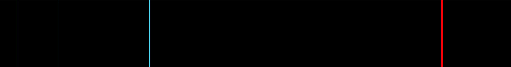
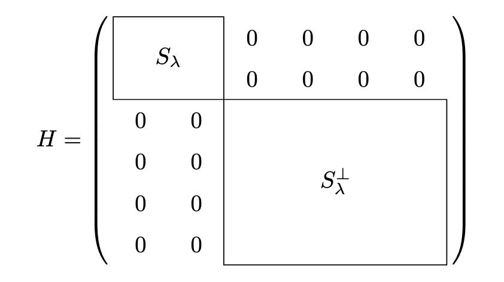
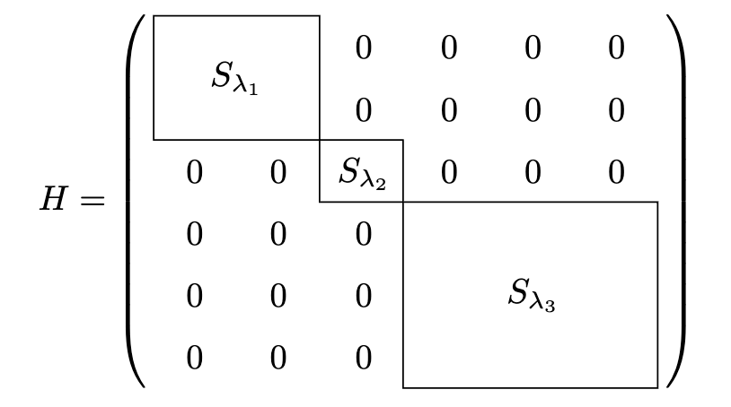
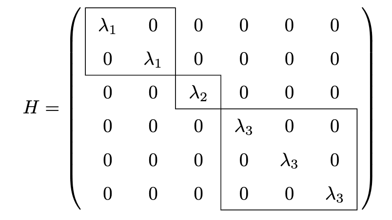
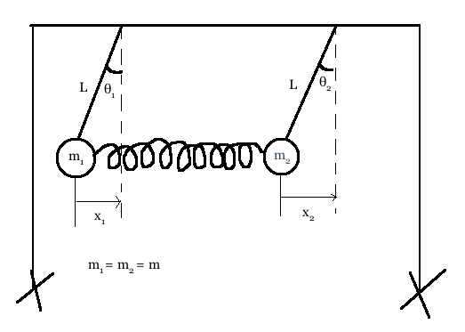
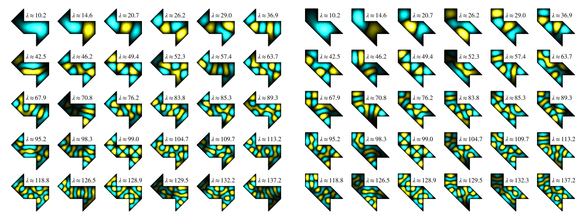

The Spectral Theorem

The spectral theorem: Every Hermitian operator on a complex vector space has an orthonormal eigenbasis whose eigenvalues are real.
(i.e., any Hermitian operator \(H\) can be written \(H = UDU^\dagger\) where \(U\) is unitary and \(D\) is diagonal with real entries.)
Theory
Background
In linear algebra, an operator on a (real or complex) vector space \(V\) is a linear transformation \(T: V{\rightarrow}V\) mapping \(V\) into itself. For \(T\) to be called a linear transformation as opposed to just a function, it must obey the two rules of linearity: for any vectors \(v_1, v_2 \in V\), and any scalar \(c\),
- \(T(v_1+v_2) = T(v_1) + T(v_2)\)
- \(T(cv_1) = cT(v_1)\)
The adjoint of an operator \(T\) is its conjugate-transpose.
For example, if \[T = \begin{pmatrix} 1 & 2i & 3 \\ 2i & i & 5-4i \\ -1+2i & 0 & 4-3i \end{pmatrix} \] its adjoint is \[ T^\dagger = \begin{pmatrix} 1 & -2i & -1-2i \\ -2i & -i & 0 \\ 3 & 5+4i & 4+3i \end{pmatrix} \]
An operator \(H: V{\rightarrow}V\) is called Hermitian if it is equal to its adjoint (also known as its conjugate-transpose), written \(H = H^\dagger\).
The example matrix \(T\) from earlier is not Hermitian.
However, the following matrix \(H\) is Hermitian: \[H = \begin{pmatrix} 1 & -2i & -1-2i \\ 2i & 0 & 0 \\ -1+2i & 0 & -3 \end{pmatrix} \]
Notice in particular that if a matrix is Hermitian, its diagonal can only consist of real entries.
For real vector spaces, the Hermitian operators are just the symmetric operators, that is, operators which are equal to their transpose, because the conjugate of a real number is itself.
Notation
When I write \(\braket{u,v}\), this means “the inner product of \(u\) and \(v\)”, and it can also be written as \(u^\dagger v\). I am borrowing this from bra-ket notation, which is just a shorthand notation used a lot in quantum mechanics. To be honest I think outside of quantum mechanics, Dirac notation isn’t necessarily better in any aspects, it’s just more of a convenience.
Also many times in this article I focus on the vector space \({\bf C}^n\), so you might be wondering whether all the results in here apply for general vector spaces as well. Actually it turns out that by specifying a basis, every finite dimensional vector space is isomorphic to \({\bf C}^n\), where \(n\) is the dimension of the vector space. When two spaces are isomorphic it just means we can start with the vectors of one space, relabel them in some specific way to vectors of the other space, and no one can tell the difference. So actually, anything we prove about \({\bf C}^n\) applies to all finite-dimensional vector spaces. In \({\bf C}^n\), linear transformations are represented as matrices, so I’ll often abuse notation and say that a linear operator \(T\in L(V)\) is the same as its corresponding matrix in \({\bf C}^n\).
Proof for complex vector spaces
Lemma: Every linear operator on a complex vector space must have at least one eigenvalue.
Proof of lemma:
Let \(V\) be an \(n\) dimensional complex vector space, and \(T\) be a linear operator. The space of linear operators of \(V\), written \(L(V,V)\) is isomorphic to the space of \(n\times n\) matrices. In particular, \(L(V,V)\) has dimension \(n^2\). This means that the set
\[I, T, T^2, T^3,\cdots, T^{n^2}\]
is linearly dependent because it has \((n^2+1)\) elements, which means there is a set of coefficients, not all zero, such that
\[c_0 + c_1 T + c_2 T^2 + \cdots + c_{m} T^m = 0\]
where \(c_m\neq 0\) and \(m\leq n^2\).
By the fundamental theorem of algebra, this polynomial must have \(m\) complex roots \(x_1,\cdots, x_m\), so that we can factor this into the form
\[(T - x_1)(T - x_2)\cdots (T-x_m) = 0\]
At least one of these factors must have a non-trivial null-space (otherwise, they would all be invertible, and their product would be invertible and hence non-zero). Let’s say \((T-x_i)\) has a non-trivial null-space. Then \(x_i\) is the eigenvalue of \(T\) we are looking for.
Proof of rest of theorem:
Let \(V\) be an \(n\)-dimensional complex inner product space, and \(H\) be a Hermitian operator. It must have some eigenvalue, let’s call it \(\lambda\). Consider the subspace \(S_\lambda\) consisting of all vectors which have \(\lambda\) as their eigenvalue. Because of its definition, \(S_\lambda\) is invariant under \(H\), since for any \(v\in S_\lambda\), \(Hv = \lambda v \in S_\lambda\) also has eigenvalue \(\lambda\), so \(H S_\lambda \subset S_\lambda\).
Now consider the orthogonal complement \(S_\lambda^\perp\), which consists of the vectors in \(V\) which are orthogonal to every vector in \(S_\lambda\). These two subspaces together make up the vector space, so that we can write \(V = S_\lambda \oplus S_\lambda^\perp\). This symbolic expression means that any vector in \(V\) can be decomposed uniquely into the sum of a vector from \(S_\lambda\) and a vector from \(S_\lambda^\perp\).
Here is the crucial part of the proof which uses the fact that \(H\) is Hermitian. If \(u\in S_\lambda^\perp\), that means \(u\) is orthogonal to every vector \(v\in S_\lambda\), so that
\[\braket{v|Hu} = \braket{Hv|u} = \lambda^*\braket{u|v} = 0\]
so \(Hu\in S_\lambda^\perp\). This means that \(H S_\lambda^\perp \subset S_\lambda^\perp\), so that \(S_\lambda^\perp\) is invariant.
Hence we can separate our operator on its restriction to the two subspaces: \(H = (H| _ {S _ \lambda}) \oplus (H| _ {S _ \lambda ^ \perp})\)
The resulting matrix representation of \(H\) now looks something like this:

(The exact shape of the matrix will depend on the dimension of eigenspace \(S_\lambda\); this dimension is called the multiplicity of \(\lambda\)).
We can now repeat this process for the smaller matrix \(H| _ {S _ \lambda^\perp}\) (i.e. \(H\) restricted to the subspace \(S_\lambda^\perp\)). When we can repeat no longer, we end up with a decomposition of \(H\) into its restriction on its eigenspaces:

If we look only at what \(H\) does on each individual eigenspace \(S _ {\lambda _ i}\), \(H\) just scales each vector in the eigenspace by its eigenvalue \(\lambda\), that is, \(H| _ { S _ {\lambda _ i} } = \lambda_i I\). So if we just choose any orthonormal basis for each subspace (for example, using the Gramd-Schmidt procedure), we can re-express \(H\) in this basis as the matrix

In this basis we have constructed made out of the eigenvectors, \(H\) is simply a diagonal matrix with its eigenvalues along the diagonal.
Even though we’ve changed basis, the fact that \(H\) is Hermitian has not changed (the fancy way to say this is that Hermitianess is a property which is invariant under an orthogonal change of basis). So the diagonal matrix pictured above is Hermitian. This means the entries along the diagonal must be equal to their conjugate, and hence real. This means that the eigenvalues of \(H\) are real, so we are finished with the proof.
Finite dimensional applications
Rotational inertia tensor
A rigid body is a system of masses where the distances of each mass to one another are fixed. For such a rigid body which is fixed with respect to the origin, we can identify an axis of rotation \(\bf{\omega}\) called the angular velocity such that the velocity of any particle \(\bf{v_i}\) is given by \(\bf{v_i} = \bf{\omega} \times \bf{r_i}\).
The angular momentum of a single particle is defined as \(\bf{L} = \bf{r}\times \bf{p}\) where \(\bf{r}\) is the position vector of the particle and \(p\) is its momentum.
The total angular momentum of the body is given by
\[ \begin{align*} \bf{L} &= \sum_i m_i \bf{r_i}\times \bf{v_i} \\ &= \sum_i m_i \bf{r_i}\times (\bf{\omega} \times \bf{r_i}) \end{align*} \]
From the equation we can see that \(\bf{L}\) depends linearly on \(\omega\). If we expand out the individual components, we get the following linear relation:
\[ \begin{pmatrix} L_x \\ L_y \\ L_z \end{pmatrix} = \begin{pmatrix} \sum_i m_i (y_i^2 + z_i^2) & -\sum_i m_i x_i y_i & -\sum_i m_i x_i z_i \\ -\sum_i m_i x_i y_i & \sum_i m_i (z_i^2 + x_i^2) & -\sum_i m_i y_i z_i \\ -\sum_i m_i x_i z_i & -\sum_i m_i y_i z_i & \sum_i m_i (x_i^2 + y_i^2) \end{pmatrix} \begin{pmatrix} \omega_x \\ \omega_y \\ \omega_z \end{pmatrix} \]
Hence we can write \(\bf{L} = I \bf{\omega}\), where \(I\) is called the tensor of inertia (in this context, tensor really means second-order tensor, which is just a linear transformation, and can be represented as a matrix). Note that \(I\) is a symmetric tensor. By the spectral theorem, we can find an orthonormal basis \(\hat{\bf{x}}', \hat{\bf{y}}', \hat{\bf{z}}'\) such that the relation looks like this:
\[ \begin{pmatrix} L_x' \\ L_y'\\ L_z' \end{pmatrix} = \begin{pmatrix} \lambda_1 & 0 & 0 \\ 0 & \lambda_2 & 0 \\ 0 & 0 & \lambda_3 \end{pmatrix} \begin{pmatrix} \omega_x' \\ \omega_y' \\ \omega_z' \end{pmatrix} \]
Normal modes

The x-component of the gravitational force acting on the first mass is \(-m_1 g x_1/L\). The spring exerts a force of \(k(x_2-x_1)\). Similar equations hold for the second mass. Hence we can use \(F_x = m a_x\) for the two masses to write two equations describing the dynamics:
\[ \begin{align*} (-m_1 g x_1/L) + k(x_2-x_1) &= m_1 \tfrac{d^2}{dt^2} x_1 \\ (-m_2 g x_2/L) - k(x_2-x_1) &= m_2 \tfrac{d^2}{dt^2} x_2 \end{align*} \]
We can write this in matrix form:
\[ \tfrac{d^2}{dt^2} \begin{pmatrix} x_1 \\ x_2 \end{pmatrix} = \begin{pmatrix} -g/L - k/m_1 & k/m_1 \\ k/m_2 & -g/L - k/m_2 \end{pmatrix} \begin{pmatrix} x_1 \\ x_2 \end{pmatrix} \]
Singular value decomposition (SVD)

https://en.wikipedia.org/wiki/File:Singular-Value-Decomposition.svg
Principle component analysis (PCA)
 https://en.wikipedia.org/wiki/File:GaussianScatterPCA.svg
https://en.wikipedia.org/wiki/File:GaussianScatterPCA.svg
Suppose we have a random vector \(X\), and we make a bunch of observations \(x_1, \cdots, x_P\). We can organize this into a matrix
\[ M = \begin{pmatrix} \vdots & & \vdots \\ x_1 & \dots & x_P \\ \vdots & & \vdots \end{pmatrix} \]
The sample covariance matrix is defined \(K_{XX} = \frac{1}{P-1} MM^T\). This is symmetric! By the spectral theorem, we can find an orthornormal basis in which \(X\) looks uncorrelated, i.e., find an orthonormal matrix \(U\) such that \(Y = U^{-1} X\) is uncorrelated: \(K_{YY}\) is diagonal.
Infinite dimensional applications
Fourier transform
It turns out the operator \(\tfrac{1}{2\pi i}\frac{d}{dt}\) is Hermitian in \(L^2({\bf R})\). We can verify this by expanding out the integrals and using integration by parts.
\[ \begin{align*} \braket{x(t)|\tfrac{1}{2\pi i}\tfrac{d}{dt}|y(t)} &= \int _ {-\infty}^\infty x ^ *(t) \tfrac{1}{2\pi i}\tfrac{d}{dt} y(t) dt \\ &= [\tfrac{1}{2\pi i} x ^ *(t) y(t)] _ {-\infty}^\infty - \int_{-\infty}^\infty y(t) \tfrac{1}{2\pi i}\tfrac{d}{dt}x ^ *(t) dt \\ &= \braket{y(t)|\tfrac{1}{2\pi i}\tfrac{d}{dt}|x(t)} ^ * \end{align*} \]
(The second step used the fact that \(x,y\) were square-integrable functions, so they have to vanish at infinity, so \([\tfrac{1}{2\pi i} x(t)^* y(t)]_{-\infty}^\infty = 0\))
Because it is Hermitian, the spectral theorem says there is a complete set of orthonormal eigenvectors. These eigenvectors are found by solving the equation
\[ (\tfrac{1}{2\pi i}\tfrac{d}{dt}) x(t) = \lambda x(t) \]
which has only one solution: \[ x(t) = e^{2\pi i\lambda t} \]
Hence the eigenvectors are complex sinusoids, and the corresponding eigenvalue is the frequency of the complex sinusoid.
Vibrating Membranes
Can one hear the shape of a drum?
— Mark Kac, 1966, American Mathematical Monthly
Suppose we have a simple region \(\Omega\) in the plane, and we stretch a membrane on it. The wave equation for vibrating membranes is
\[ (\partial_x^2 + \partial_y^2) u = \frac{1}{c^2}\partial_t^2 u \]
where \(u(t, x,y)\) is height and \(c\) is the speed of waves on the membrane. We require \(u=0\) on the boundary of the drum. The Hilbert space under study is the set of square-integrable functions \(u: {\bf R}\times \Omega {\rightarrow}{\bf R}\) which are 0 on the boundary of \(\Omega\) at all times. We solve this by finding the eigenvalues of \((\partial_x^2 + \partial_y^2)\).

Spherical Harmonics
The Laplacian in spherical coordinates is:
\[ \begin{pmatrix} dx \\ dy \\ dz \end{pmatrix} = \begin{pmatrix} \sin\theta \cos\varphi & r \cos\theta \cos\varphi & -r \sin\theta \sin\varphi \\ \sin\theta \sin\varphi & r \cos\theta \sin\varphi & r \sin\theta \cos\varphi \\ \cos\theta & -r \sin\theta & 0 \end{pmatrix} \begin{pmatrix} dr \\ d\theta \\ d\varphi \end{pmatrix} \]
\[ \begin{pmatrix} dx \\ dy \\ dz \end{pmatrix} = \begin{pmatrix} \sin\theta \cos\varphi & \cos\theta \cos\varphi & -\sin\varphi \\ \sin\theta \sin\varphi & \cos\theta \sin\varphi & \cos\varphi \\ \cos\theta & -\sin\theta & 0 \end{pmatrix} \begin{pmatrix} dr \\ rd\theta \\ r\sin\theta d\varphi \end{pmatrix} \]
\[ \begin{pmatrix} dr \\ rd\theta \\ r\sin\theta d\varphi \end{pmatrix} = \begin{pmatrix} \sin\theta \cos\varphi & \sin\theta \sin\varphi & \cos\theta \\ \cos\theta \cos\varphi & \cos\theta \sin\varphi & -\sin\theta \\ -\sin\varphi & \cos\varphi & 0 \end{pmatrix} \begin{pmatrix} dx \\ dy \\ dz \end{pmatrix} \]
\[ \begin{pmatrix} dr \\ d\theta \\ d\varphi \end{pmatrix} = \begin{pmatrix} \sin\theta \cos\varphi & \sin\theta \sin\varphi & \cos\theta \\ \tfrac{1}{r}\cos\theta \cos\varphi & \tfrac{1}{r}\cos\theta \sin\varphi & -\tfrac{1}{r}\sin\theta \\ -\tfrac{1}{r\sin\theta}\sin\varphi & \tfrac{1}{r\sin\theta}\cos\varphi & 0 \end{pmatrix} \begin{pmatrix} dx \\ dy \\ dz \end{pmatrix} \]
Suppose
\[ \nabla^2 f = \frac{1}{r^2}{\frac{\partial }{\partial r}}\left ( r^2{\frac{\partial f}{\partial r}} \right ) + \frac{1}{r^2\sin\theta}{\frac{\partial }{\partial \theta}} \left ( \sin\theta{\frac{\partial f}{\partial \theta}} \right ) + \frac{1}{r^2\sin^2\theta}{\frac{\partial^2 f}{\partial^2 \varphi}} \]
Now suppose \(f(r, \theta, \varphi) = R(r)Y(\theta, \phi)\). Plugging it in, we get
\[ f \mapsto \frac{1}{\sin\theta}{\frac{\partial }{\partial \theta}} \left ( \sin\theta{\frac{\partial f}{\partial \theta}} \right ) + \frac{1}{\sin^2\theta}{\frac{\partial^2 f}{\partial^2 \varphi}} \]
we can separate coordinates to get a tensor-product separation:

image source: https://en.wikipedia.org/wiki/File:Rotating_spherical_harmonics.gif
 image source: https://en.wikipedia.org/wiki/File:Sphericalfunctions.svg
image source: https://en.wikipedia.org/wiki/File:Sphericalfunctions.svg
Maxwell’s Equations
\[ \begin{align*} \nabla \cdot E &= \rho / \epsilon_0 \\ \nabla \cdot B &= 0 \\ \nabla \times E &= -{\frac{\partial B}{\partial t}} \\ \nabla \times B &= \mu_0 J + \epsilon_0 \mu_0 {\frac{\partial E}{\partial t}} \end{align*} \]
Expanded out into components, this becomes
\[ \begin{align*} \partial_y E_z - \partial_z E_y &= -\partial_t B_x \\ \partial_z E_x - \partial_x E_z &= -\partial_t B_y \\ \partial_x E_y - \partial_y E_x &= -\partial_t B_z \\ \partial_y B_z - \partial_z B_y &= \mu_0 J_x + \epsilon_0 \mu_0 \partial_t E_x \\ \partial_z B_x - \partial_x B_z &= \mu_0 J_y + \epsilon_0 \mu_0 \partial_t E_y \\ \partial_x B_y - \partial_y B_x &= \mu_0 J_z + \epsilon_0 \mu_0 \partial_t E_z \end{align*} \]
\[ \bigoplus_6 \bigotimes_{3+1} L^2({\bf R}) = \bigoplus_6 L^2({\bf R}^{3+1}) \]
\[ \braket{u_1\oplus v_1 | u_2\oplus v_2} = \braket{u_1|u_2} + \braket{v_1|v_2} \] \[ \braket{u_1\otimes v_1 | u_2\otimes v_2} = \braket{u_1|u_2} \braket{v_1|v_2} \]
\[ \begin{pmatrix} 0 & -\partial_z & +\partial_y & +\frac{1}{c}\partial_t & 0 & 0 \\ +\partial_z & 0 & -\partial_x & 0 & +\frac{1}{c}\partial_t & 0 \\ -\partial_y & +\partial_x & 0 & 0 & 0 & +\frac{1}{c}\partial_t \\ -\frac{1}{c}\partial_t & 0 & 0 & 0 & -\partial_z & +\partial_y \\ 0 & -\frac{1}{c}\partial_t & 0 & +\partial_z & 0 & -\partial_x \\ 0 & 0 & -\frac{1}{c}\partial_t & -\partial_y & +\partial_x & 0 \end{pmatrix} \begin{pmatrix} E_x \\ E_y \\ E_z \\ cB_x \\ cB_y \\ cB_z \end{pmatrix} = \begin{pmatrix} 0 \\ 0 \\ 0 \\ c\mu_0 J_x \\ c\mu_0 J_y \\ c\mu_0 J_z \end{pmatrix} \]
We already concluded that \(\tfrac{1}{2\pi i} \partial_x\) is Hermitian, so we know that \((i\partial_x)\) is also Hermitian since it’s just the first operator scaled by the real number \(-2\pi\). Hence we can work out the adjoint of the derivative operator:
\[ \begin{align*} (i\partial_x)^\dagger &= i\partial_x \\ i (i\partial_x)^\dagger &= i^2\partial_x \\ (-i i \partial_x)^\dagger &= -\partial_x \\ (\partial_x)^\dagger &= -\partial_x \end{align*} \]
Suppose we have two vector spaces \(U, V\). An arbitrary linear transformation \(A\) on the vector space \(U\oplus V\) can be written as
\[ \begin{pmatrix} A_{uu} & A_{uv} \\ A_{vu} & A_{vv} \end{pmatrix} \begin{pmatrix} u \\ v \end{pmatrix} = (A_{uu} u + A_{uv} v) \oplus (A_{vu} u + A_{vv} v) \]
Under what circumstances is \(A\) Hermitian?
\[ \begin{pmatrix} u_1^\dagger & v_1^\dagger \end{pmatrix} \begin{pmatrix} A_{uu} & A_{uv} \\ A_{vu} & A_{vv} \end{pmatrix} \begin{pmatrix} u_2 \\ v_2 \end{pmatrix} = \left [ \begin{pmatrix} u_2^\dagger & v_2^\dagger \end{pmatrix} \begin{pmatrix} A_{uu} & A_{uv} \\ A_{vu} & A_{vv} \end{pmatrix} \begin{pmatrix} u_1 \\ v_1 \end{pmatrix} \right ]^* \]
This requires \(A_{uu}, A_{vv}\) to be Hermitian, and \(A_{uv} = A_{vu}^\dagger\)
Further Reading
Introduction to Quantum Mechanics, David Griffiths. Even though it only discusses quantum mechanics, the math it develops can be applied to pretty much anything that uses waves, since all wave equations are essentially the same. The spectral theorem is so essential to quantum mechanics that it is discussed in depth there. This book is accessible to anyone with knowledge of basic calculus and linear algebra. It’s a legendary physics textbook, known for its clarity and its honest discussions of deep matters.
Mathematics of Classical and Quantum Physics
Real and Complex Analysis, Walter Rudin. Very rigorous, do not read unless you have taken an intro to real analysis course. I have personally only glanced through it, my impression is that infinite dimensional Hilbert spaces are much more nuanced than finite dimensional ones.
Linear Algebra Done Right, Sheldon Axler. The proof of the spectral theorem in this article was taken from this book.
Advanced Linear Algebra, Roman. The first few chapters give a superb introduction to the abstract side of vector spaces.
Linear Algebra and Its Applications 5th edition, David Lay, Steven Lay, Judi McDonald. The singular value decomposition is explained very well in chapter 7.